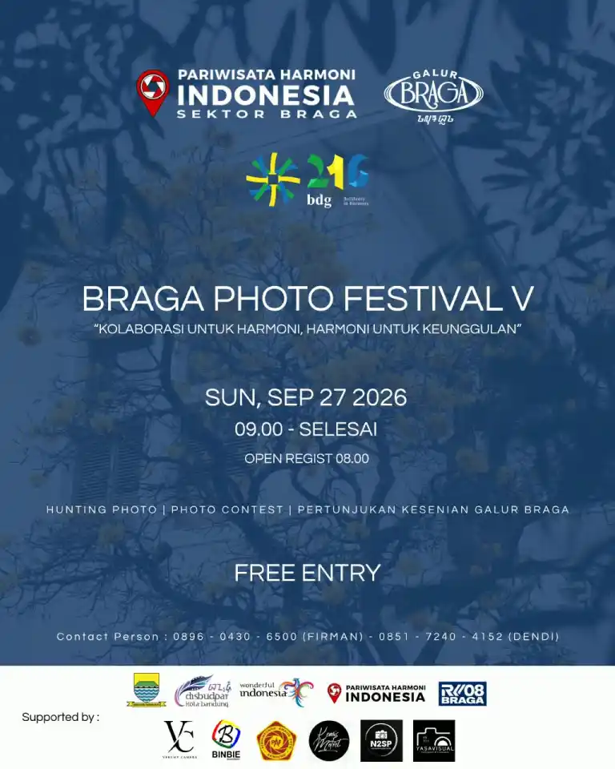

Hunting Photo, Photo Contest, dan Pertunjukan Kesenian Galur Braga

Kawasan Braga Bandung akan kembali menjadi ruang bertemunya fotografi, seni, pariwisata, dan komunitas kreatif melalui Braga Photo Festival V. Mengusung tema "Kolaborasi untuk Harmoni, Harmoni untuk Keunggulan", kegiatan ini akan menghadirkan pengalaman fotografi sekaligus pertunjukan seni di salah satu kawasan ikonik Kota Bandung.
Braga Photo Festival V dijadwalkan berlangsung pada Minggu, 27 September 2026, mulai pukul 09.00 WIB hingga selesai. Peserta dapat melakukan registrasi mulai pukul 08.00 WIB.
Festival ini menjadi ruang kolaborasi antara berbagai pihak yang memiliki perhatian terhadap fotografi, pariwisata, seni, dan aktivitas kreatif di kawasan Braga.
Dengan latar kawasan Braga yang memiliki karakter arsitektur, jalanan bersejarah, aktivitas masyarakat, serta suasana urban yang khas, para fotografer dapat mengeksplorasi berbagai sudut visual untuk menghasilkan karya fotografi dengan perspektif masing-masing.
Salah satu agenda utama Braga Photo Festival V adalah hunting photo. Kegiatan ini memberikan kesempatan kepada fotografer untuk menjelajahi kawasan Braga sambil mengabadikan berbagai momen, objek, suasana, dan aktivitas yang berlangsung selama festival.
Selain hunting photo, acara juga menghadirkan photo contest. Kompetisi ini menjadi bagian dari kegiatan fotografi yang memberikan ruang bagi peserta untuk menuangkan kreativitas dan sudut pandang mereka terhadap kawasan Braga melalui karya visual.
Braga Photo Festival V tidak hanya berfokus pada fotografi. Pengunjung juga dapat menikmati pertunjukan kesenian Galur Braga yang menjadi bagian dari rangkaian acara.
Kehadiran pertunjukan seni memberikan tambahan objek visual bagi para fotografer. Ekspresi para seniman, gerakan pertunjukan, interaksi penonton, hingga suasana kawasan Braga dapat menjadi bagian dari dokumentasi fotografi selama festival berlangsung.
Tema "Kolaborasi untuk Harmoni, Harmoni untuk Keunggulan" menjadi semangat utama dalam Braga Photo Festival V. Kolaborasi antara komunitas, pelaku pariwisata, fotografer, seniman, dan berbagai pihak pendukung menjadi bagian dari upaya menghadirkan aktivitas kreatif di kawasan Braga.
Bagi komunitas fotografi, kegiatan seperti ini juga menjadi kesempatan untuk bertemu dengan fotografer lainnya, berbagi pengalaman, memperluas jaringan, serta mengembangkan karya melalui aktivitas fotografi bersama.
N2SP (Ngopi Ngopi Sambil Phopotoan) turut menjadi salah satu komunitas pendukung dalam kegiatan Braga Photo Festival V. Keterlibatan ini menjadi bagian dari aktivitas N2SP dalam mendukung ruang kreatif dan kegiatan fotografi di Bandung.
Melalui kegiatan bersama seperti ini, fotografi tidak hanya menjadi aktivitas untuk menghasilkan gambar, tetapi juga menjadi sarana pertemuan, komunikasi, dokumentasi, dan kolaborasi antar komunitas serta pelaku kreatif.
Braga Photo Festival V menjadi salah satu ruang bagi fotografer, komunitas, seniman, dan masyarakat untuk menikmati kawasan Braga melalui perspektif fotografi dan seni.
Dengan agenda hunting photo, photo contest, serta pertunjukan kesenian Galur Braga, kegiatan ini diharapkan dapat mempertemukan berbagai elemen kreatif dalam suasana kolaboratif.
Bagi para fotografer dan pecinta fotografi di Bandung, 27 September 2026 menjadi kesempatan untuk hadir, membawa kamera, mengeksplorasi Braga, dan menangkap berbagai cerita visual yang hadir sepanjang festival.
"Kolaborasi untuk Harmoni, Harmoni untuk Keunggulan"
#BragaPhotoFestivalV #BragaBandung #FotografiBandung #KomunitasFotografiBandung #HuntingPhotoBandung #PhotoContest #GalurBraga #N2SP #Bandung #EventFotografiBandung #PariwisataBandung